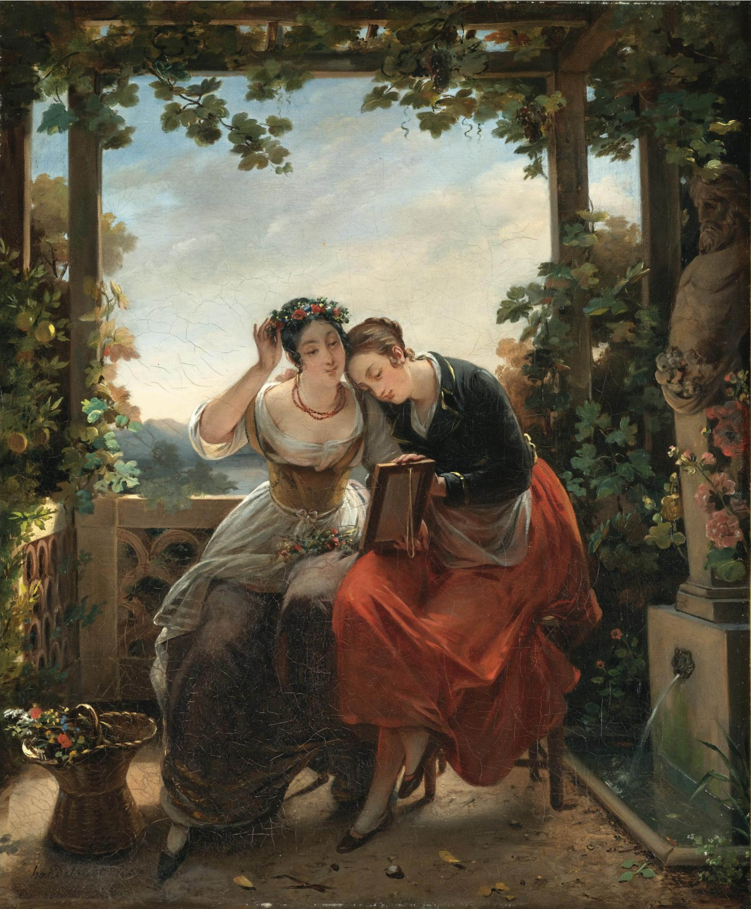

Antoinette Cécile Hortense Haudebourt-Lescot
Hortense Haudebourt-Lescot foi uma das poucas artistas mulheres a construir uma carreira sólida na primeira metade do século XIX. Tendo perdido o pai ainda jovem, Hortense Viel decidiu, já adulta, adotar o sobrenome de seu padrasto, Jean-Louis Lescot.
Biografia
1784 – 1845
Ela demonstrou talento precoce para a dança e a pintura e, ainda criança – por volta dos sete ou dez anos, segundo diversos relatos da época –, começou a estudar com o pintor de história Guillaume Guillon Lethière (1760–1832).
Em 1807, acompanhou-o a Roma com alguns amigos da família: tendo se tornado diretor da Academia Francesa em Roma, G. Guillon Lethière permitiu que ela completasse sua formação nessa escola, o que lhe proporcionaria, notavelmente, a oportunidade de desenhar antiguidades.
Tendo H. Lescot em alta consideração, o mestre a acolheu sob sua proteção; ela recebeu seu apoio e conselhos e se beneficiou de suas conexões. Ele a apresentou a muitos artistas proeminentes, incluindo Jean-Auguste-Dominique Ingres (1780–1867) e Antonio Canova (1757–1822). Essa longa estadia na Itália (1807–1816), rara na formação de uma artista que, por ser mulher, era impedida de concorrer ao Prêmio de Roma, provou ser decisiva. H. Lescot exibiu seu trabalho no Capitólio, em Roma, e em 1810 ela foi admitida na Academia de São Lucas. No mesmo ano, estreou no Salão de Paris com oito cenas de gênero retratando a vida na Itália. Sua obra de 1812, Le Baisement des pieds de la statue de saint Pierre dans la basilique Saint-Pierre de Rome (Musée National du Château de Fontainebleau), adquirida por Luís XVIII, comprovou que ela havia se tornado uma artista talentosa e amplamente reconhecida.
Suas obras
Referência bibliográfica:
AWARE. Antoinette Cécile Hortense Haudebourt-Lescot, née Viel [s. d.]. Disponível em: https://awarewomenartists.com/en/artiste/antoinette-cecile-hortense-haudebourt-lescot-nee-viel/.